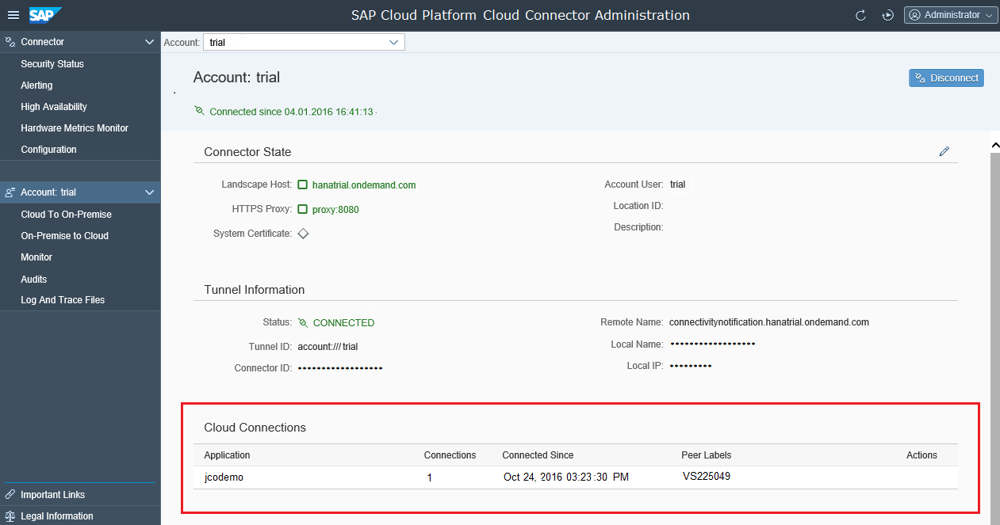

Troubleshooting
This page provides you with details on how to monitor the state of your open tunnel connections in the Cloud connector. You can also view different types of logs and traces that can help you troubleshoot connection problems.
To find a solution for a particular problem or an error you have encountered, you can refer to the Cloud connector troubleshooting pages. For more information, see Connectivity Support.
It is possible to view the list of all currently connected applications. To do that, choose your Account from the left menu and go to section Cloud Connections:

The information available covers:
- Application name: The name of the application, as also shown in the cockpit, for your account
- Connections: The number of currently existing connections to the application
- Connected Since: The earliest start time of a connection to this application
- Peer Labels: The name of the application processes, as also shown for this application in the cockpit, for your account.
On the Logs tab page, you can find some log files that can help you troubleshoot problems with the internal operation of the Cloud connector. These logs are intended primarily for SAP Support. They cover both internal Cloud connector operations and details about the communication between the local and the remote (SAP Cloud Platform) tunnel endpoint.
If you encounter problems during your business process, which seem to be caused by some trouble in the communication between your cloud application and the on-premise system, choose Log and Trace Files from your Account menu and activate the respective traces by clicking the Edit button.
- Cloud Connector Loggers adjusts the levels for Java loggers directly related to Cloud connector functionality.
- Other Loggers adjusts the log level for all other Java loggers available in the runtime (which is very rarely needed). You only need to change the level when requested by SAP Support. It will produce a lot of trace entries.
- CPIC Trace Level allows you to set the level between 0 and 3 and provides traces for the CPIC-based RFC communication with ABAP systems.
- When the Payload Trace is activated for an account, all the HTTP and RFC traffic crossing the tunnel for that account going through this Cloud connector, is traced in files with names traffic_trace_<account id>_on_<landscapehost>.trc.
Use payload and CPIC tracing on Level 3 carefully and only when requested to do so for support reasons. In particular, the trace may write sensitive information (such as payload data of HTTP/RFC requests and responses) to the trace files, and thus, present a potential security risk. For this reason the Cloud connector (effective version 2.2) supports an implementation of a "four-eyes principle" for activating the trace levels that dump the network traffic into a trace file. When this four-eyes principle is in place, two users are required for the activation of a trace level that would record traffic data.
For more information about setting this extra security measure, see Securing the Activation of Traffic Traces.
In this section, you can view all existing trace files and delete the ones that are no longer needed.
To prevent your browser from being overloaded when files of several megabytes or even gigabytes are loaded simultaneously, the Cloud connector loads only one page into memory and you can display the trace file one page at a time by clicking the View icon. Use the paginator buttons to scroll forward/backward by one page (angle bracket), or jump to the beginning or the end of the file (page numbers on the left and the right).
Via the Download/Download All icons you can create a ZIP archive containing one particular trace file or all trace files and download it to your local file system for convenient analysis of larger trace files.
Once a problem has been identified, you can turn off the trace again by editing the trace and log settings accordingly.
On this screen, you can use the Refresh button to update the displayed information (this option is also available on all other screens). For example, you can use this button because more trace files might have been written since you last updated the display.